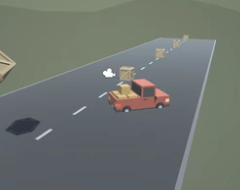
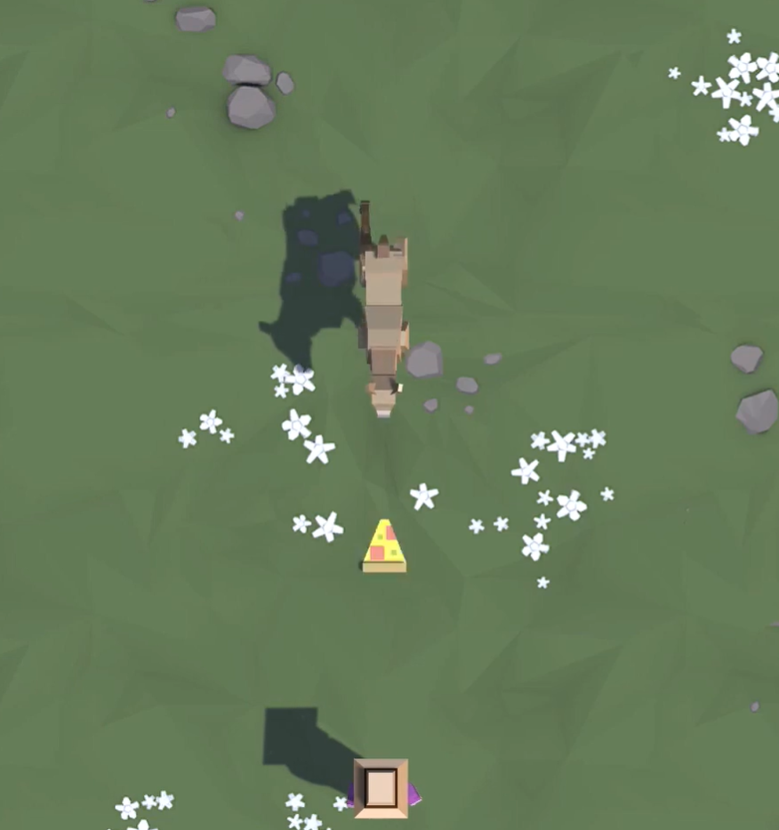
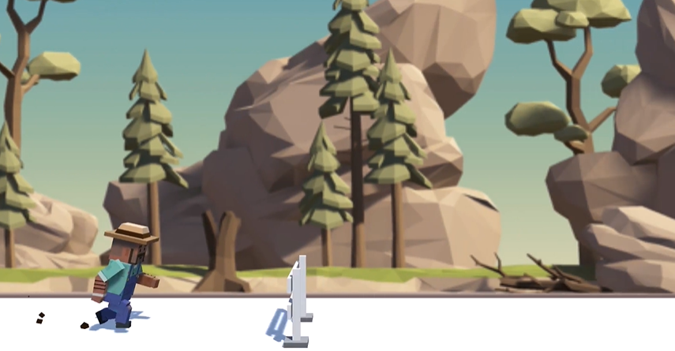
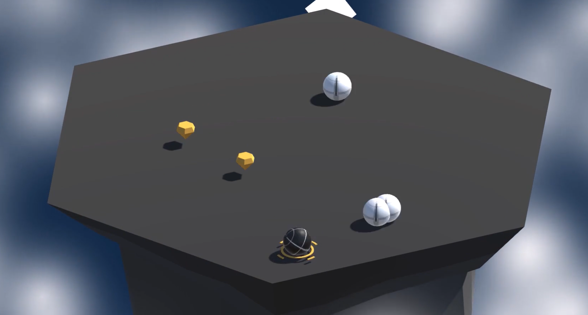

BTH har ett program som är fokuserat på spelprogrammering som
heter civilingejör i spelteknik, detta program är det programmet
jag helst vill komma in på.
Antagningen: 2022: Alla kom in som sökte 2023:Alla kom in som
sökte
Svåraste moment för att komma in
Måste klara Fysik 2
KTH
KTH är även en möjlighet då datateknik programmet har kurser för
spelprogrammering. Dock är programmet inte lika fokuserat på
spelprogrammering som BTH.
Antagningen: 2022: 20,75 merit för att komma in 2023: 20,63 merit
för att komma in
Svåraste moment för att komma in
Måste få höga betyg på de flesta ämnenena för att få nog merit
eller så behöver jag få bra resultat på Högskoleprovet.
Projekt
Create with code av Unity
Jag har genomfört kurs innehållet fram till projekt 4 i kursen.
Nedan finns information om vad jag lärt mig av varje projekt
Projekt 1

I detta projekt bekantade jag mig med Unitys redigerare och
arbetsflöde, jag lärde mig hur man skapar nya C#-skript och
gjorde lite enkel programmering. I slutet av projektet kunde jag
anropa grundläggande funktioner, samt deklarera och justera nya
variabler för att ändra resultatet av funktionerna.
Projekt 2

I det här projektet programmerade jag ett spel från
ovanperspektiv där målet var att kasta mat till hungriga djur
som rusar mot mig innan de kan springa förbi mig. För att göra
det lärde jag mig mer om några av de viktigaste programmerings-
och Unitykoncepten, som if-satser, slumpmässig värdegenerering,
vektorer, kollisionsdetektering, prefabs och instansiering. När
jag slutförde den här projektet kunde jag kunna programmera ett
enkelt spel med möjlighet att skjuta projektiler och styra
spelaren för att hålla spelet igång.
Projekt 3

I det hära projektet programmerade jag ett fartfyllt oändligt
sidscrollande spring-spel där spelaren måste hoppa över hinder
som kommer emot än för att undvika att krascha. När jag skapade
den här prototypen lärde jag mig hur man lägger till musik och
ljudeffekter, som helt förändrar upplevelsen av mina projekt.
Jag lärde mig också hur man skapar dynamiska oändliga upprepande
bakgrunder, som är avgörande för alla sidscrollande spel.
Slutligen lärde jag mig hur man lägger till partikeleffekter som
stänk och explosioner, som gör mina spel mycket roligare att
spela.
Projekt 4

I det här projektet programmerade jag ett arkad-stil Sumo-spel
där målet är att knuffa bort allt svårare vågor av fiender från
en flytande ö, och använda power ups för att hjälpa till att
besegra dem. När jag skapade den här prototypen lärde jag mig
hur man lägger till ny spelmekanik i mina projekt, som är nya
regler eller system som gör spelet mer intressant att spela.
T.ex lärde jag mig att programmera en power up, som ger spelaren
en tillfällig fördel och så lärde jag mig att programmera allt
svårare fiendevågor, som gör överlevnad mer utmanande för
spelaren. En bra balans mellan power ups och ökande
svårighetsgrad skapde en mycket mer intressant spelupplevelse.